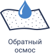
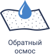
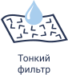
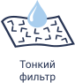

 



Наши преимущества
Самая чистая и полезная вода, которую можно использовать для любых нужд.
Вода высшей питьевой категории
Мы используем самые современные промышленные системы очистки воды, позволяющие получать
воду премиум класса, обогащенную необходимым количеством солей и минералов.
воду премиум класса, обогащенную необходимым количеством солей и минералов.
Забота об окружающей среде
Каждую минуту в мире производятся 1 миллион одноразовых пластиковых бутылок. Отказавшись от
покупки воды в пластиковой таре, вы поможете бороться с загрязнением окружающей среды.
Вода в 5 раз дешевле
Покупать воду в розлив значительно дешевле чем в пластиковых бутылках. Зачем снова и снова
платить за пластиковые бутылки? Ведь стоимость тары может составлять до 80% от общей стоимости.
Аппараты питьевой воды - это удобно
Больше нет необходимости стоять в очереди в супермаркете для того чтобы купить воды или
несколько дней ждать доставки в офис или домой. Водоматы удобно расположены, а налить воду в них
очень легко и быстро.